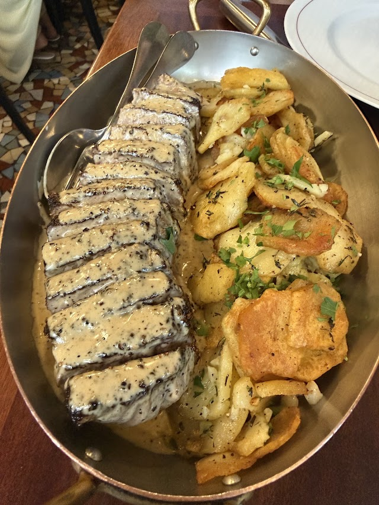
| 営業時間 | 火〜土 12:00〜14:00 / 7:30〜22:30 |
|---|---|
| 定休日 | 日・月曜 |
| 住所 | 18 Rue Paul Bert, 75011 Paris(11区) |
| 予約 | 可(推奨) — ☎ 電話で予約 +33 1 43 72 24 01 ／ 公式サイト |
| 公式 | 公式サイト |
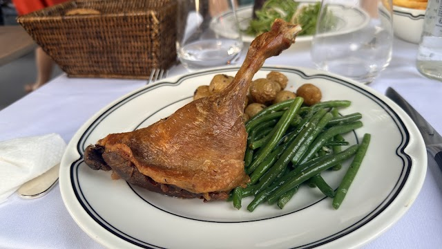
| 営業時間 | 月〜金 12:30-14:30 / 19:30-22:30 |
|---|---|
| 定休日 | 土・日曜 |
| 住所 | 117 Rue du Cherche-Midi, 75006 Paris(6区) |
| 予約 | 可(推奨) — ☎ 電話で予約 +33 1 45 48 52 40 ／ 公式サイト |
| 公式 | 公式サイト |
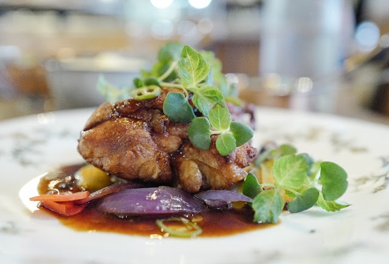
| 営業時間 | 火〜金 12:00-13:30 / 19:00-21:00、土 12:00-13:30 / 19:00-20:30 |
|---|---|
| 定休日 | 日・月曜 |
| 住所 | 27 Rue Malar, 75007 Paris(7区) |
| 予約 | 可(推奨) — ☎ 電話で予約 +33 1 47 05 86 89 ／ 公式サイト |
| 公式 | 公式サイト |
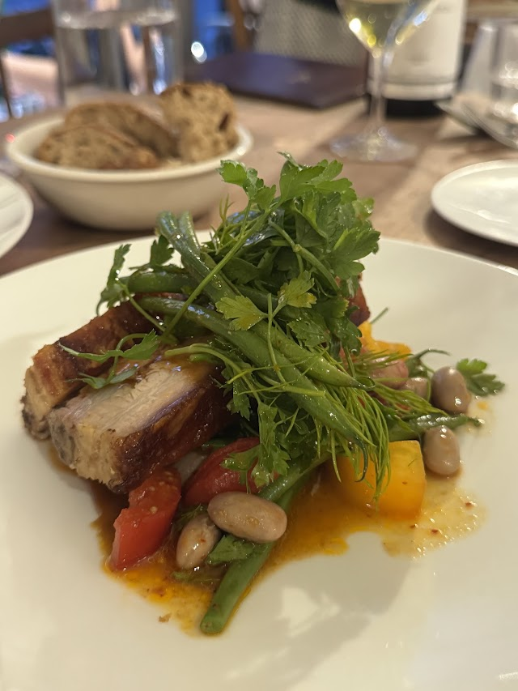
| 営業時間 | 月〜土 12:00〜14:00 / 7:30〜22:30 |
|---|---|
| 定休日 | 日曜 |
| 住所 | 32 Rue Saint-Maur, 75011 Paris(11区) |
| 予約 | 可(推奨) — ☎ 電話で予約 +33 1 55 28 51 82 ／ 公式サイト |
| 公式 | 公式サイト |
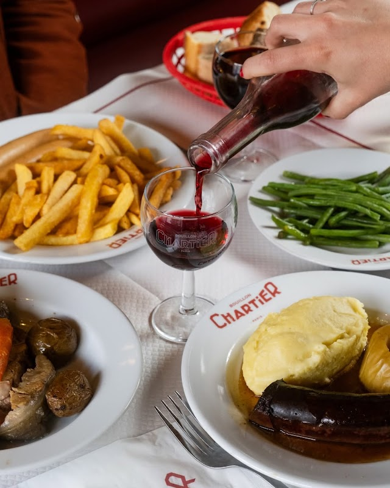
| 営業時間 | 毎日 11:00-24:00(通し営業・予約不可) |
|---|---|
| 定休日 | 無休 |
| 住所 | 7 Rue du Faubourg Montmartre, 75009 Paris(9区) |
| 予約 | 可(推奨) — ☎ 電話で予約 +33 1 47 70 86 29 ／ 公式サイト |
| 公式 | 公式サイト |
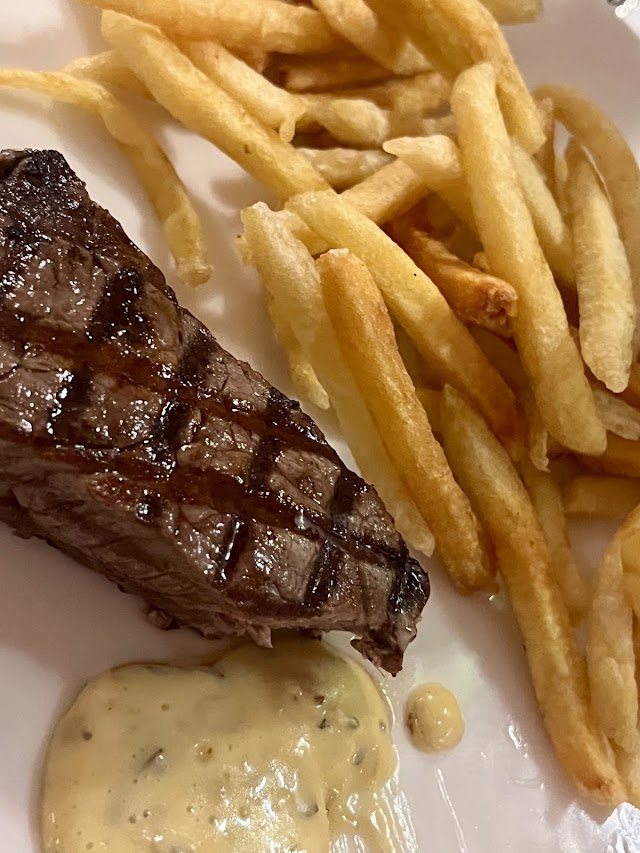
| 営業時間 | 月〜金 12:00-14:30 / 19:00-23:00 |
|---|---|
| 定休日 | 土・日曜 |
| 住所 | 1 Rue du Mail, 75002 Paris(2区) |
| 予約 | 可(推奨) — ☎ 電話で予約 +33 1 42 60 07 11 ／ 公式サイト |
| 公式 | 公式サイト |
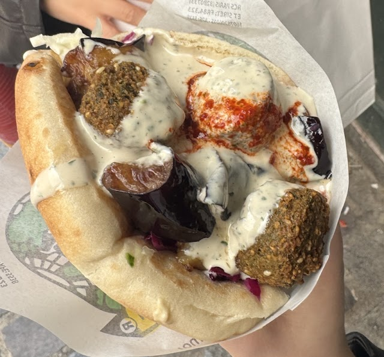
| 営業時間 | 日〜木 11:00-24:00、金 11:00-17:00 |
|---|---|
| 定休日 | 土曜(安息日) |
| 住所 | 34 Rue des Rosiers, 75004 Paris(4区・マレ地区) |
| 予約 | 不要(店頭) — ☎ 電話で予約 +33 1 48 87 63 60 ／ 公式サイト |
| 公式 | 公式サイト |
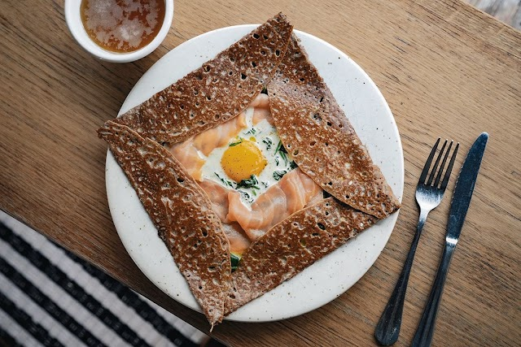
| 営業時間 | 月〜日 9:00〜23:00 |
|---|---|
| 定休日 | なし |
| 住所 | 109 Rue Vieille du Temple, 75003 Paris(3区・マレ地区) |
| 予約 | 不要(店頭) — ☎ 電話で予約 +33 1 42 72 13 77 ／ 公式サイト |
| 公式 | 公式サイト |
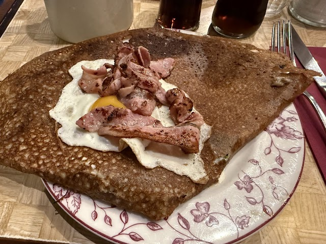
| 営業時間 | 火 5:30〜23:00 / 水〜土 11:30〜23:00 / 日 11:30〜22:30 |
|---|---|
| 定休日 | 月曜 |
| 住所 | 67 Rue du Montparnasse, 75014 Paris(14区) |
| 予約 | 不要(店頭) — ☎ 電話で予約 +33 1 43 20 93 50 |
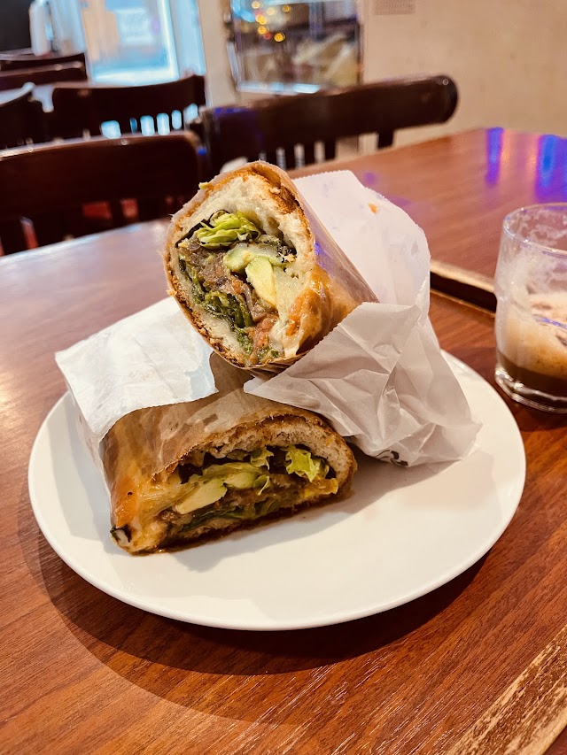
| 営業時間 | 水〜日 9:00〜17:00 |
|---|---|
| 定休日 | 月・火曜 |
| 住所 | 26 Rue Charlot, 75003 Paris(3区・マレ地区、マルシェ・デ・ザンファン・ルージュ内にも屋台あり) |
| 予約 | 不要(店頭) — ☎ 電話で予約 +33 9 86 17 28 00 ／ 公式サイト |
| 公式 | 公式サイト |
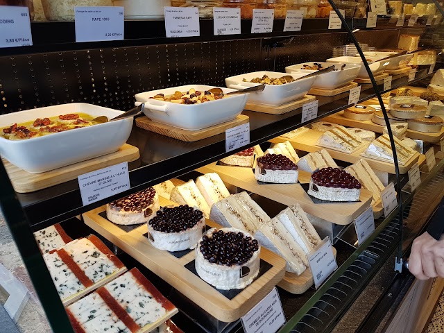
| 営業時間 | 火〜土 8:00〜20:00 / 日 8:00〜13:00 |
|---|---|
| 定休日 | 月曜 |
| 住所 | 47 ter Boulevard Saint-Germain, 75005 Paris(5区) |
| 予約 | 不要(店頭) — ☎ 電話で予約 +33 1 43 54 50 93 ／ 公式サイト |
| 公式 | 公式サイト |
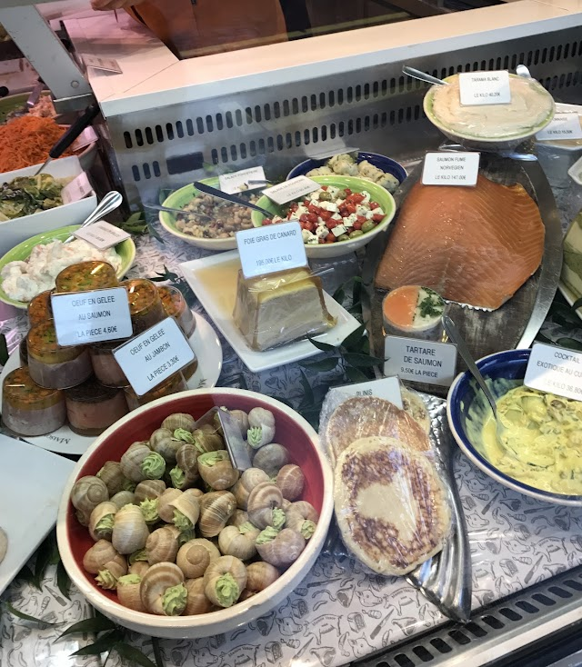
| 営業時間 | 火〜金 9:00〜20:00 / 土 9:00〜19:30 |
|---|---|
| 定休日 | 月・日曜 |
| 住所 | 3 Rue Notre-Dame des Champs, 75006 Paris(6区) |
| 予約 | 不要(店頭) — ☎ 電話で予約 +33 1 45 48 83 32 ／ 公式サイト |
| 公式 | 公式サイト |
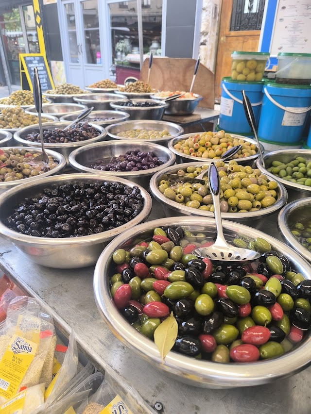
| 営業時間 | 露店市: 火〜金 7:30-13:30、土・日 7:30-14:30(屋根付き市場は夕方も営業) |
|---|---|
| 定休日 | 月曜 |
| 住所 | Place d'Aligre / Rue d'Aligre, 75012 Paris(12区) |
| 予約 | 不要(店頭) |
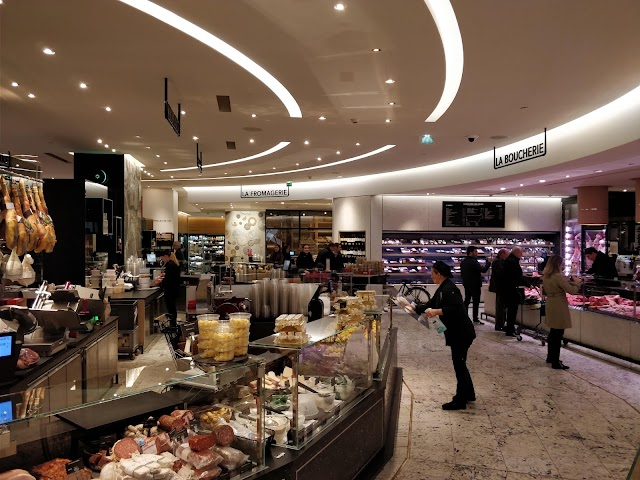
| 営業時間 | 月〜土 8:30-21:00、日 10:00-20:00 |
|---|---|
| 定休日 | 無休 |
| 住所 | 38 Rue de Sèvres, 75007 Paris(7区) |
| 予約 | 不要(店頭) — ☎ 電話で予約 +33 1 44 39 81 00 ／ 公式サイト |
| 公式 | 公式サイト |
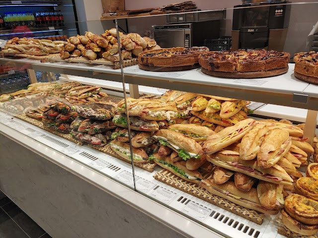
| 営業時間 | 月〜土 7:00〜20:00 / 日 7:00〜14:30 |
|---|---|
| 定休日 | なし |
| 住所 | 12 Rue du Faubourg Poissonnière, 75010 Paris(10区) |
| 予約 | 不要(店頭) — ☎ 電話で予約 +33 1 47 70 00 77 |
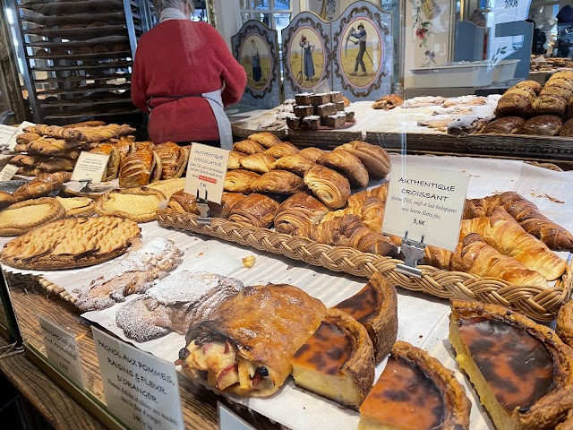
| 営業時間 | 月〜金 7:00〜19:30 |
|---|---|
| 定休日 | 土・日曜 |
| 住所 | 34 Rue Yves Toudic, 75010 Paris(10区) |
| 予約 | 不要(店頭) — ☎ 電話で予約 +33 1 42 40 44 52 ／ 公式サイト |
| 公式 | 公式サイト |
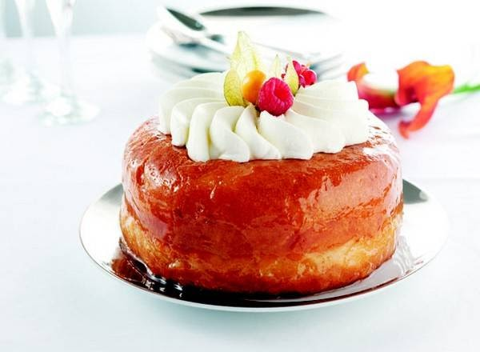
| 営業時間 | 月〜土 8:00〜20:30 / 日 8:00〜20:00 |
|---|---|
| 定休日 | なし |
| 住所 | 51 Rue Montorgueil, 75002 Paris(2区) |
| 予約 | 不要(店頭) — ☎ 電話で予約 +33 1 42 33 38 20 ／ 公式サイト |
| 公式 | 公式サイト |
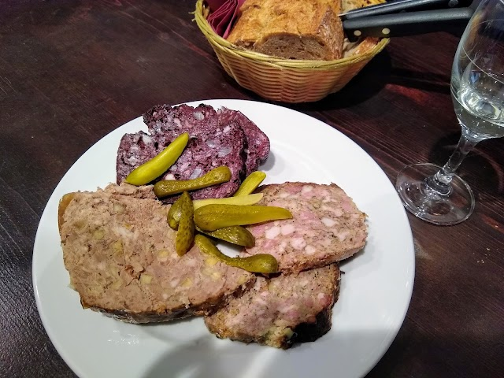
| 営業時間 | 月 17:00-21:00、火〜金 10:00-14:00 / 17:00-21:00、土 10:00-15:00 / 17:00-21:00、日 10:00-16:00 |
|---|---|
| 定休日 | 無休(月曜は夕方のみ) |
| 住所 | 1 Rue Théophile Roussel, 75012 Paris(12区) |
| 予約 | 可(推奨) — ☎ 電話で予約 +33 1 43 43 14 32 ／ 公式サイト |
| 公式 | 公式サイト |
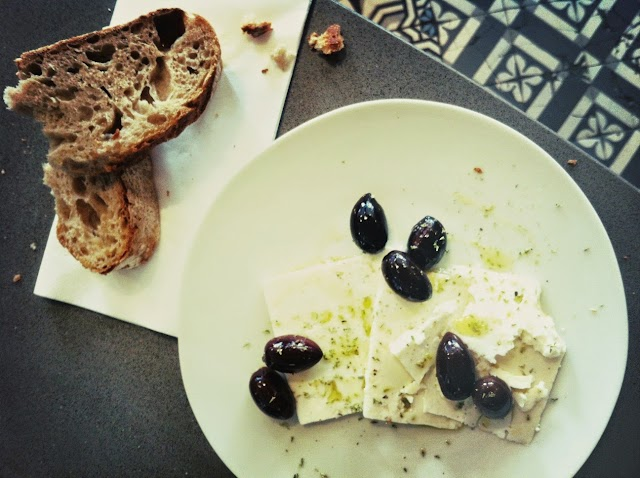
| 営業時間 | 月〜日 5:00〜22:00 |
|---|---|
| 定休日 | なし |
| 住所 | 67 Rue Saint-Maur, 75011 Paris(11区) |
| 予約 | 可(推奨) — ☎ 電話で予約 +33 9 83 56 94 11 ／ 公式サイト |
| 公式 | 公式サイト |
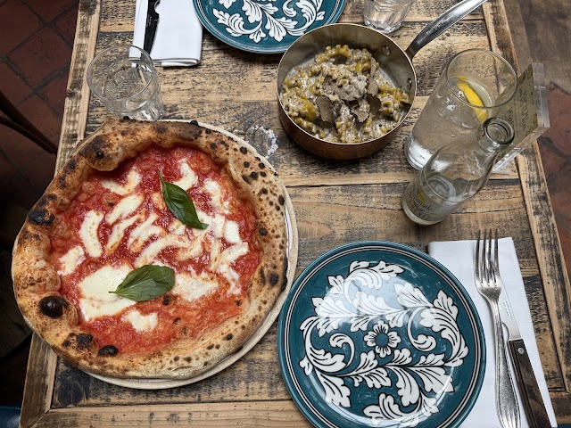
| 営業時間 | 月〜水 12:00-14:30/18:45-22:45、木〜金 12:00-14:30/18:30-22:45、土日 12:00-15:30/18:30頃-22:45 |
|---|---|
| 定休日 | 無休 |
| 住所 | 107 Boulevard Richard-Lenoir, 75011 Paris(11区) |
| 予約 | 可(推奨) — ☎ 電話で予約 +33 9 73 03 41 90 ／ 公式サイト |
| 公式 | 公式サイト |
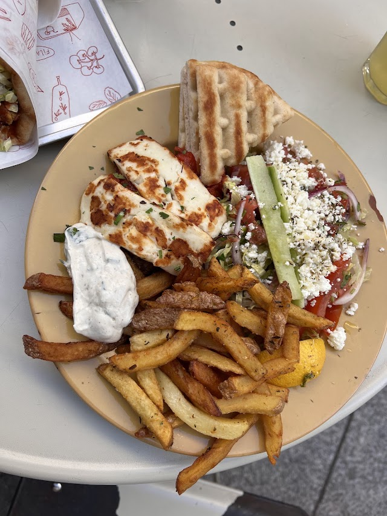
| 営業時間 | 月〜土 11:30〜15:00 / 6:30〜22:30 |
|---|---|
| 定休日 | 日曜 |
| 住所 | 9 Rue Mandar, 75002 Paris(2区) |
| 予約 | 可(推奨) — ☎ 電話で予約 +33 1 42 21 42 88 ／ 公式サイト |
| 公式 | 公式サイト |
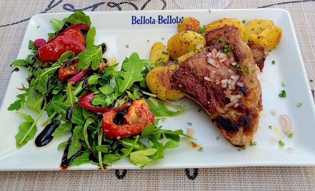
| 営業時間 | 火〜土 11:00〜19:00 |
|---|---|
| 定休日 | 月・日曜 |
| 住所 | 18 Rue Jean-Nicot, 75007 Paris(7区) |
| 予約 | 可(推奨) — ☎ 電話で予約 +33 1 42 73 39 31 ／ 公式サイト |
| 公式 | 公式サイト |
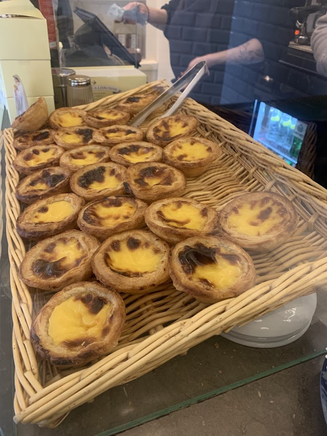
| 営業時間 | 11:00-19:00 |
|---|---|
| 定休日 | 無休(年中無休) |
| 住所 | 37 Rue du Roi-de-Sicile, 75004 Paris(4区) |
| 予約 | 可(推奨) — ☎ 電話で予約 +33 7 61 23 42 30 ／ 公式サイト |
| 公式 | 公式サイト |
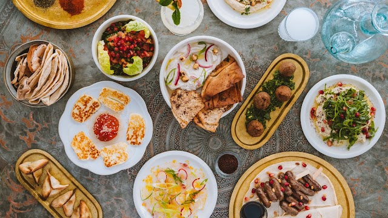
| 営業時間 | 月〜木 12:00-14:30/19:30-22:30、金 12:00-14:30/19:30-23:00、土 19:30-23:00、日 12:00-15:30 |
|---|---|
| 定休日 | 土曜昼・日曜夜 |
| 住所 | 14 Rue de la Banque, 75002 Paris(2区) |
| 予約 | 可(推奨) — ☎ 電話で予約 +33 1 55 35 00 66 |
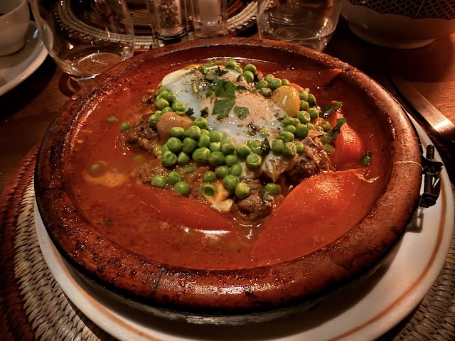
| 営業時間 | 月〜金 12:00〜14:30 / 7:30〜23:30 / 土・日 12:00〜16:00 / 7:30〜23:30 |
|---|---|
| 定休日 | なし |
| 住所 | 69 Rue des Gravilliers, 75003 Paris(3区) |
| 予約 | 可(推奨) — ☎ 電話で予約 +33 1 42 74 57 81 ／ 公式サイト |
| 公式 | 公式サイト |
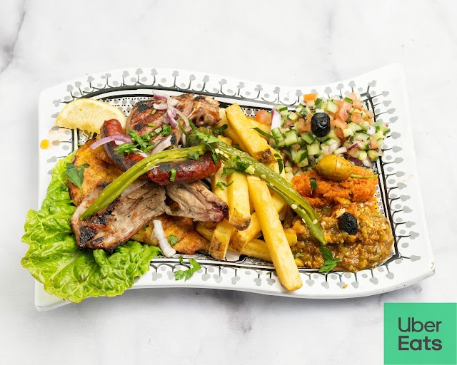
| 営業時間 | 火〜日 12:00-22:00(通し営業) |
|---|---|
| 定休日 | 月曜 |
| 住所 | 166 Rue Saint-Charles, 75015 Paris(15区) |
| 予約 | 可(推奨) — ☎ 電話で予約 +33 1 86 04 07 76 ／ 公式サイト |
| 公式 | 公式サイト |
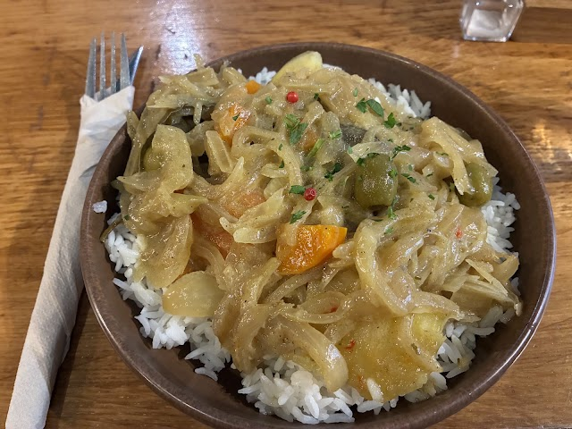
| 営業時間 | 月〜木 11:30〜22:30 / 金・土 11:30〜23:00 / 日 11:30〜22:00 |
|---|---|
| 定休日 | なし |
| 住所 | 14 Rue de la Fidélité, 75010 Paris(10区) |
| 予約 | 可(推奨) — ☎ 電話で予約 +33 9 82 54 17 48 ／ 公式サイト |
| 公式 | 公式サイト |
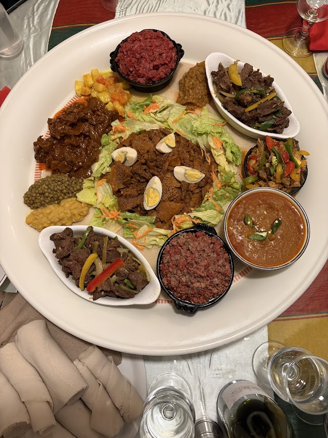
| 営業時間 | 月〜日 12:00〜16:00 / 18:00〜2:00 |
|---|---|
| 定休日 | なし |
| 住所 | 4 Rue Sauffroy, 75017 Paris(17区) |
| 予約 | 可(推奨) — ☎ 電話で予約 +33 1 46 27 00 82 ／ 公式サイト |
| 公式 | 公式サイト |
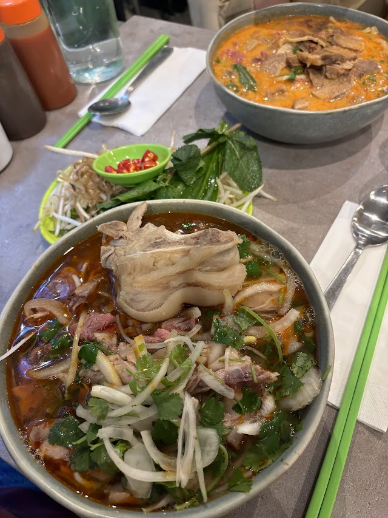
| 営業時間 | 火〜金 12:00〜15:00 / 6:45〜22:15 / 土 12:00〜15:00 / 6:30〜22:15 / 日 12:00〜15:00 / 6:45〜22:15 |
|---|---|
| 定休日 | 月曜 |
| 住所 | 13 Rue Philibert-Lucot, 75013 Paris(13区) |
| 予約 | 可(推奨) — ☎ 電話で予約 +33 1 45 85 97 36 ／ 公式サイト |
| 公式 | 公式サイト |
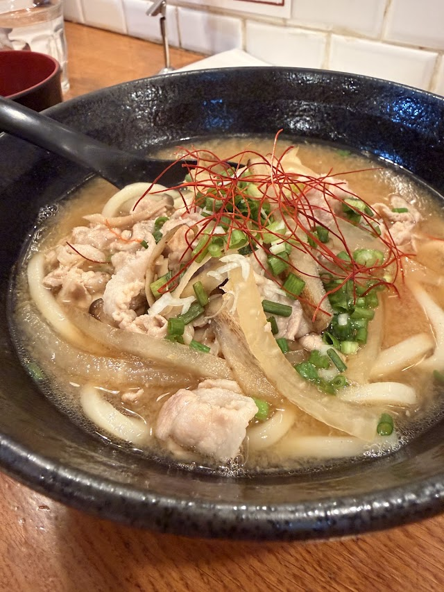
| 営業時間 | 11:30-22:00(通し営業) |
|---|---|
| 定休日 | 無休(第2火曜昼は清掃のため休み・要確認) |
| 住所 | 9 Rue d'Argenteuil, 75001 Paris(1区) |
| 予約 | 可(推奨) — ☎ 電話で予約 +33 1 42 60 52 61 ／ 公式サイト |
| 公式 | 公式サイト |
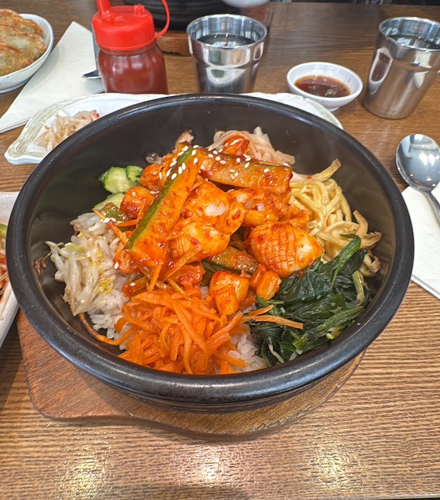
| 営業時間 | 月〜木 12:00〜14:45 / 6:30〜22:15 / 金 12:00〜14:45 / 6:30〜22:30 / 土 11:45〜22:30 / 日 12:00〜16:00 |
|---|---|
| 定休日 | なし |
| 住所 | 6 Rue Thérèse, 75001 Paris(1区) |
| 予約 | 可(推奨) — ☎ 電話で予約 +33 1 40 15 91 07 |
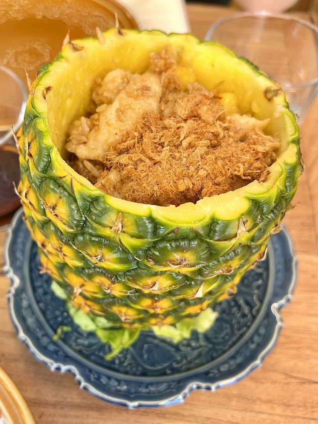
| 営業時間 | 12:00-15:00/19:00-23:30 |
|---|---|
| 定休日 | 無休(要確認) |
| 住所 | 49 Rue de Belleville, 75019 Paris(19区) |
| 予約 | 可(推奨) — ☎ 電話で予約 +33 1 40 40 09 68 ／ 公式サイト |
| 公式 | 公式サイト |
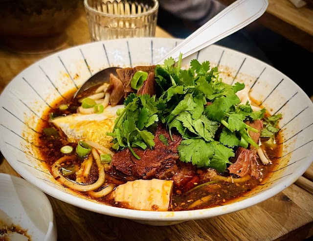
| 営業時間 | 火〜日 12:00〜23:00 |
|---|---|
| 定休日 | 月曜 |
| 住所 | 184 Rue Saint-Martin, 75003 Paris(3区) |
| 予約 | 可(推奨) — ☎ 電話で予約 +33 6 52 66 75 31 ／ 公式サイト |
| 公式 | 公式サイト |
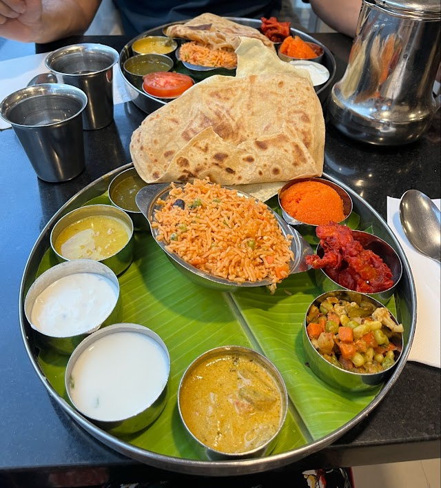
| 営業時間 | 月〜日 10:00〜23:00 |
|---|---|
| 定休日 | なし |
| 住所 | 170 Rue du Faubourg Saint-Denis, 75010 Paris(10区) |
| 予約 | 可(推奨) — ☎ 電話で予約 +33 1 40 05 01 01 ／ 公式サイト |
| 公式 | 公式サイト |
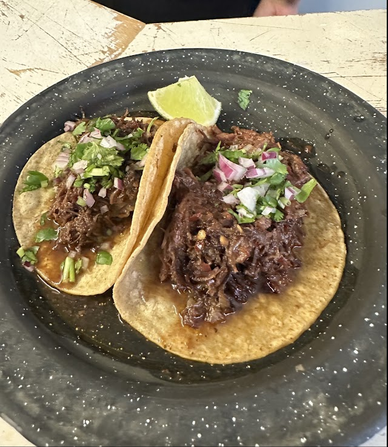
| 営業時間 | 月〜金 16:00〜1:30 / 土・日 12:00〜1:30 |
|---|---|
| 定休日 | なし |
| 住所 | 52 Rue de Saintonge, 75003 Paris(3区) |
| 予約 | 可(推奨) — 公式サイト |
| 公式 | 公式サイト |
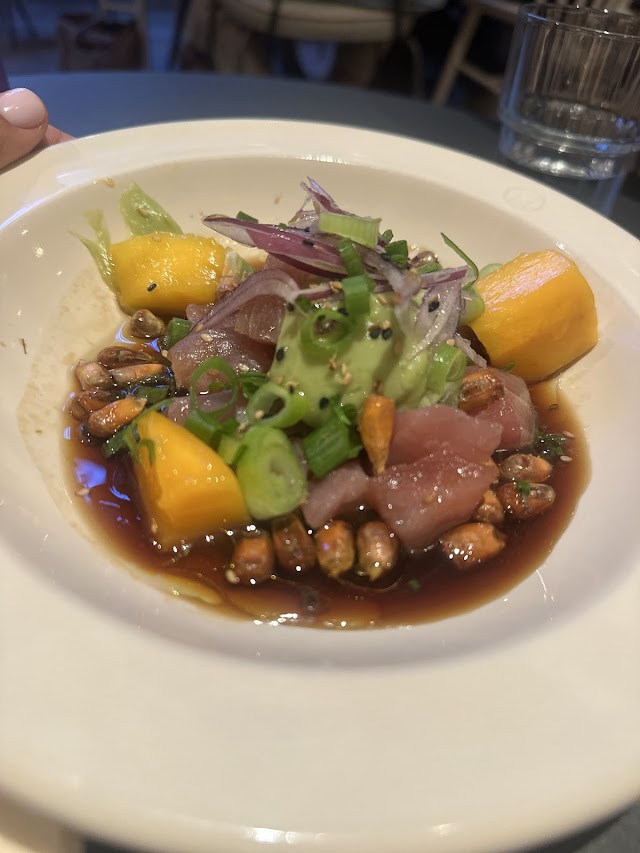
| 営業時間 | 月〜金 12:00〜15:00 / 18:00〜0:00 / 土 12:00〜0:00 |
|---|---|
| 定休日 | 日曜 |
| 住所 | 14 Rue Bachaumont, 75002 Paris(2区)※他に12 Rue Martel(10区)等 |
| 予約 | 可(推奨) — ☎ 電話で予約 +33 9 74 73 55 47 ／ 公式サイト |
| 公式 | 公式サイト |
※多くのビストロは日月休み。13区(Phở Tài)・ベルヴィル(Lao Siam)・サンタンヌ通り(Sanukiya)はアジア食の遠征先として。
選考基準: ①個人・公式ブログ/現地メディアでの名店言及 ②複数レビューサイトでの口コミ・行列の突出 ③創業年・代替わりのある老舗 ④食の専門街・市場立地 ⑤受賞歴・ガイド掲載。写真は各店の料理・店内の実写(Google Maps投稿写真、© Google)。予約は各カードの「予約」欄のリンク(電話/予約サイト)から。営業時間・定休日は2026年7月時点の各種サイト情報で、変更があり得ます。